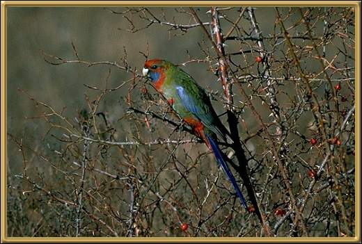

These birds are found through much of NSW and all of Vic, with a small area up in Northern Queensland. They are a rather noisy bird, and beautiful! Their picture has been used for a very long time as the symbol for Rosella tomato sauce! (my favourite) - otherwise known as Ketchup. The are fairly easy to tame.
Photographer: J Fields